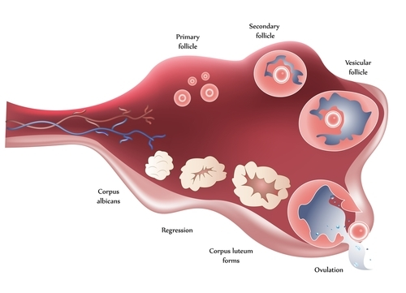

Changes in Females During Puberty. Two obvious changes of puberty in girls are growth and development of the breasts and pubic hair. The stages begin around age 10 and are completed by about age 14.
This image depicts a true wonder of nature. This tiny human sperm is penetrating a much larger egg. These two cells will unite to become a brand new human being. The process in which they unite is called fertilization. Do you know how sperm and egg cells are produced? When and where do they form? Do you know what will happen to the egg and sperm after they unite? How will the fertilized egg develop into a complete and very complex human being? You’ll find answers to all of these questions when you read this chapter.
The reproductive system in both males and females consists of structures that produce reproductive cells, or gametes, and secrete sex hormones. A gamete is a haploid cell that combines with another haploid gamete during fertilization. Sex hormones are chemical messengers that control sexual development and reproduction. The male reproductive system consists of structures that produce male gametes called sperm and secrete the male sex hormone testosterone.
The main structures of the male reproductive system are shown in Figure below . Locate them in the figure as you read about them below. You can also watch an animation about male reproductive structures at this link: http://www.medindia.net/animation/male_reproductive_system.asp .
Male Reproductive Structures. Organs of the male reproductive system include the penis, testes, and epididymis. Several ducts and glands are also part of the system. Do you know the reproductive functions of any of these structures?
The penis is an external genital organ with a long shaft and enlarged tip called the glans penis. The shaft of the penis contains erectile tissues that can fill with blood and cause an erection. When this occurs, the penis gets bigger and stiffer. The urethra passes through the penis. Sperm pass out of the body through the urethra. (During urination, the urethra carries urine from the bladder.)
The two testes (singular, testis) are located below the penis. They hang between the thighs in a sac of skin called the scrotum. Each testis contains more than 30 meters (90 feet) of tiny, tightly packed tubules called seminiferous tubules. These tubules are the functional units of the testes. They produce sperm and secrete testosterone.
The seminiferous tubules within each testis join to form the epididymis. The epididymis (plural, epididymes) is a coiled tube about 6 meters (20 feet) long lying atop the testis inside the scrotum. The functions of the epididymis are to mature and store mature sperm until they leave the body.
In addition to these organs, the male reproductive system consists of a series of ducts and glands. Ducts include the vas deferens and ejaculatory ducts. They transport sperm from the epididymes to the urethra in the penis. Glands include the seminal vesicles and prostate gland. They secrete substances that become part of semen.
Semen is the fluid that carries sperm through the urethra and out of the body. In addition to sperm, it contains secretions from the glands. The secretions control pH and provide sperm with nutrients for energy.
The only obvious difference between boys and girls at birth is their reproductive organs. However, even the reproductive organs start out the same in both sexes.
In the first several weeks after fertilization, males and females are essentially the same except for their chromosomes. Females have two X chromosomes (XX), and males have an X and a Y chromosome (XY). Then, during the second month after fertilization, genes on the Y chromosome of males cause the secretion of testosterone. Testosterone stimulates the reproductive organs to develop into male organs. (Without testosterone, the reproductive organs always develop into female organs.) Although boys have male reproductive organs at birth, the organs are immature and not yet able to produce sperm or secrete testosterone.
The reproductive organs grow very slowly during childhood and do not mature until puberty. Puberty is the period during which humans become sexually mature. In the U.S., boys generally begin puberty at about age 12 and complete it at about age 18. What causes puberty to begin? The hypothalamus in the brain “tells” the pituitary gland to secrete hormones that target the testes. The main pituitary hormone involved is luteinizing hormone (LH). It stimulates the testes to secrete testosterone. Testosterone, in turn, promotes protein synthesis and growth. It brings about most of the physical changes of puberty, some of which are shown in Figure below . You can watch an animation of these and other changes that occur in boys during puberty at this link: http://www.bbc.co.uk/science/humanbody/body/interactives/lifecycle/teenagers/ .
Some of the changes that occur in boys during puberty are shown in this figure. Pubic hair grows, and the penis and testes both become larger.
Another obvious change that occurs during puberty is rapid growth. This is called the adolescent growth spurt. In boys, it is controlled by testosterone. The rate of growth usually starts to increase relatively early in puberty. At its peak rate, growth in height is about 10 centimeters (almost 4 inches) per year in the average male. Growth generally remains rapid for several years. Growth and development of muscles occur toward the end of the growth spurt in height. Muscles may continue to develop and gain strength after growth in height is finished.
A sexually mature male produces an astounding number of sperm—typically, hundreds of millions each day! Sperm production usually continues uninterrupted until death, although the number and quality of sperm decline during later adulthood.
The process of producing mature sperm is called spermatogenesis. Sperm are produced in the seminiferous tubules of the testes and become mature in the epididymis. The entire process takes about 9 to 10 weeks. You can watch an animation of spermatogenesis at this link: http://wps.aw.com/bc_martini_eap_4/40/10469/2680298.cw/content/index.html .
Seminiferous tubules can be seen in a cross section of a testis pictured in Figure below . The tubule is lined with spermatogonia, which are diploid, sperm-producing cells. Surrounding the spermatogonia are other cells. Some of these other cells secrete substances to nourish sperm, and some secrete testosterone, which is needed for sperm production.
Cross section of a testis and seminiferous tubules.
Spermatogonia lining the seminiferous tubule undergo mitosis to form primary spermatocytes, which are also diploid. The primary spermatocytes undergo the first meiotic division to form secondary spermatocytes, which are haploid. Spermatocytes make up the next layer of cells inside the seminiferous tubule. Finally, the secondary spermatocytes complete meiosis to form spermatids. Spermatids make up a third layer of cells in the tubule.
After spermatids form, they move into the epididymis to mature into sperm, like the one shown in Figure below . The spermatids grow a tail and lose excess cytoplasm from the head. When a sperm is mature, the tail can rotate like a propeller, so the sperm can propel itself forward. Mitochondria in the connecting piece produce the energy needed for movement. The head of the mature sperm consists mainly of the nucleus, which carries copies of the father’s chromosomes. The part of the head called the acrosome produces enzymes that help the head penetrate an egg.
Mature Sperm Cell. A mature sperm cell has several structures that help it reach and penetrate an egg. These structures include the tail, mitochondria, and acrosome. How does each structure contribute to the sperm’s function?
Sperm are released from the body during ejaculation. Ejaculation occurs when muscle contractions propel sperm from the epididymes. The sperm are forced through the ducts and out of the body through the urethra. As sperm travel through the ducts, they mix with fluids from the glands to form semen. Hundreds of millions of sperm are released with each ejaculation.
1. What are the two major roles of the male reproductive system?
2. Name two male reproductive organs and identify their functions.
3. List three physical changes that occur in males during puberty.
4. Outline the process of spermatogenesis. What cells are involved in the process?
5. Where do sperm mature and how do they leave the body?
6. Sexual dimorphism refers to differences between males and females of the same species. Applying what you read in this lesson, describe how human sexual dimorphism changes from fertilization to adulthood.
7. Explain how and why boys change so much during puberty.
8. If a man did not have functioning epididymes, predict how his sperm would be affected. How would this influence his ability to reproduce?
By the time they finish puberty, males have developed the traits of mature adults of their own sex. Adult males differ from adult females in many ways. Many of the differences come about because females and males develop differently during puberty.
The female reproductive system consists of structures that produce female gametes called eggs and secrete the female sex hormone estrogen. The female reproductive system has several other functions as well:
The main structures of the female reproductive system are shown in Figure below . Most of the structures are inside the pelvic region of the body. Locate the structures in the figure as you read about them below. To watch an animation of the female reproductive system, go to this link: http://www.medindia.net/animation/female_reproductive_system.asp .
Female Reproductive Structures. Organs of the female reproductive system include the vagina, uterus, ovaries, and fallopian tubes.
The external female reproductive structures are referred to collectively as the vulva. They include the labia (singular, labium), which are the “lips” of the vulva. The labia protect the vagina and urethra, both of which have openings in the vulva.
The vagina is a tube-like structure about 9 centimeters (3.5 inches) long. It begins at the vulva and extends upward to the uterus. It has muscular walls lined with mucous membranes. The vagina has two major reproductive functions. It receives sperm during sexual intercourse, and it provides a passageway for a baby to leave the mother’s body during birth.
The uterus is a muscular organ shaped like an upside-down pear. It has a thick lining of tissues called the endometrium. The lower, narrower end of the uterus is known as the cervix. The uterus is where a fetus grows and develops until birth. During pregnancy, the uterus can expand greatly to make room for the baby as it grows. During birth, contractions of the muscular walls of the uterus push the baby through the cervix and out of the body.
The two ovaries are small, egg-shaped organs that lie on either side of the uterus. They produce eggs and secrete estrogen. Each egg is located inside a structure called a follicle. Cells in the follicle protect the egg and help it mature.
Extending from the upper corners of the uterus are the two fallopian tubes. Each tube reaches (but is not attached to) one of the ovaries. The ovary end of the tube has a fringelike structure that moves in waves. The motion sweeps eggs from the ovary into the tube.
The breasts are not directly involved in reproduction, but they nourish a baby after birth. Each breast contains mammary glands, which secrete milk. The milk drains into ducts leading to the nipple. A suckling baby squeezes the milk out of the ducts and through the nipple.
Female reproductive organs form before birth. However, as in males, the organs do not mature until puberty.
Unlike males, females are not influenced by the male sex hormone testosterone during embryonic development. This is because they lack a Y chromosome. As a result, females do not develop male reproductive organs. By the third month of fetal development, most of the internal female organs have formed. Immature eggs also form in the ovary before birth. Whereas a mature male produces sperm throughout his life, a female produces all the eggs she will ever make before birth.
Like baby boys, baby girls are born with all their reproductive organs present but immature and unable to function. Female reproductive organs also grow very little until puberty. Girls begin puberty a year or two earlier than boys, at an average age of 10 years. Girls also complete puberty sooner than boys, in about 4 years instead of 6. Puberty in girls starts when the hypothalamus “tells” the pituitary gland to secrete hormones that target the ovaries. Two pituitary hormones are involved: luteinizing hormone (LH) and follicle-stimulating hormone (FSH). These hormones stimulate the ovary to produce estrogen. Estrogen, in turn, promotes growth and other physical changes of puberty. It stimulates growth and development of the internal reproductive organs, breasts, and pubic hair (see Figure below ). You can watch an animation of these and other changes that girls experience during puberty at this link: http://www.bbc.co.uk/science/humanbody/body/interactives/lifecycle/teenagers/ .
Changes in Females During Puberty. Two obvious changes of puberty in girls are growth and development of the breasts and pubic hair. The stages begin around age 10 and are completed by about age 14.
Like boys, girls also go through an adolescent growth spurt. However, girls typically start their growth spurt a year or two earlier than boys (and therefore a couple of centimeters shorter, on average). Girls also have a shorter growth spurt. For example, they typically reach their adult height by about age 15. In addition, girls generally do not grow as fast as boys do during the growth spurt, even at their peak rate of growth. As a result, females are about 10 centimeters (about 4 inches) shorter, on average, than males by the time they reach their final height.
One of the most significant changes in females during puberty is menarche. Menarche is the beginning of menstruation, or monthly periods. In U.S. girls, the average age of menarche is 12.5 years, although there is a lot of variation in this age. The variation may be due to a combination of genetic factors and environmental factors, such as diet.
At birth, a female’s ovaries contain all the eggs she will ever produce. However, the eggs do not start to mature until she enters puberty. After menarche, one egg typically matures each month until a woman reaches middle adulthood.
The process of producing eggs in the ovary is called oogenesis. Eggs, like sperm, are haploid cells, and their production occurs in several steps that involve different types of cells, as shown in Figure below . You can follow the process of oogenesis in the figure as you read about it below.
Oogenesis. Oogenesis begins before birth but is not finished until after puberty. A mature egg forms only if a secondary oocyte is fertilized by a sperm.
Oogenesis begins long before birth when an oogonium with the diploid number of chromosomes undergoes mitosis. It produces a diploid daughter cell called a primary oocyte. The primary oocyte, in turn, starts to go through the first cell division of meiosis (meiosis I). However, it does not complete meiosis until much later. The primary oocyte remains in a resting state, nestled in a tiny, immature follicle until puberty.
Beginning in puberty, each month one of the follicles and its primary oocyte starts to mature (also see Figure below ). The primary oocyte resumes meiosis and divides to form a secondary oocyte and a smaller cell, called a polar body. Both the secondary oocyte and polar body are haploid cells. The secondary oocyte has most of the cytoplasm from the original cell and is much larger than the polar body.

Maturation of a Follicle and Ovulation. A follicle matures and its primary oocyte (follicle) resumes meiosis to form a secondary oocyte in the secondary follicle. The follicle ruptures and the oocyte leaves the ovary during ovulation. What happens to the ruptured follicle then?
After 12–14 days, when the follicle is mature, it bursts open, releasing the secondary oocyte from the ovary. This event is called ovulation (see Figure above ). The follicle, now called a corpus luteum, starts to degenerate, or break down. After the secondary oocyte leaves the ovary, it is swept into the nearby fallopian tube by the waving, fringelike end (see Figure below ).
Egg Entering Fallopian Tube. After ovulation, the fringelike end of the fallopian tube sweeps the oocyte inside of the tube, where it begins its journey to the uterus.
If the secondary oocyte is fertilized by a sperm as it is passing through the fallopian tube, it completes meiosis and forms a mature egg and another polar body. (The polar bodies break down and disappear.) If the secondary oocyte is not fertilized, it passes into the uterus as an immature egg and soon disintegrates. You can watch an animation of all these events and the hormones that control them at the link below. http://health.howstuffworks.com/adam-200017.htm
Ovulation is part of the menstrual cycle , which typically occurs each month in a sexually mature female unless she is pregnant. Another part of the cycle is the monthly period, or menstruation. Menstruation is the process in which the endometrium of the uterus is shed from the body. The menstrual cycle is controlled by hormones from the hypothalamus, pituitary gland, and ovaries. For an interactive animation of the menstrual cycle, you can go this link: http://health.howstuffworks.com/adam-200132.htm
As shown in Figure below , the menstrual cycle occurs in several phases. The cycle begins with menstruation. During menstruation, arteries that supply the endometrium of the uterus constrict. As a result, the endometrium breaks down and detaches from the uterus. It passes out of the body through the vagina over a period of several days.
Phases of the Menstrual Cycle. The menstrual cycle occurs in the phases shown here.
After menstruation, the endometrium begins to build up again. At the same time, a follicle starts maturing in an ovary. Ovulation occurs around day 14 of the cycle. After it occurs, the endometrium continues to build up in preparation for a fertilized egg. What happens next depends on whether the egg is fertilized.
If the egg is fertilized, the endometrium will be maintained and help nourish the egg. The ruptured follicle, now called the corpus luteum, will secrete the hormone progesterone. This hormone keeps the endometrium from breaking down. If the egg is not fertilized, the corpus luteum will break down and disappear. Without progesterone, the endometrium will also break down and be shed. A new menstrual cycle thus begins.
For most women, menstrual cycles continue until their mid- to late forties. Then women go through menopause , a period during which their menstrual cycles slow down and eventually stop, generally by their early fifties. After menopause, women can no longer reproduce naturally because their ovaries no longer produce eggs.
1. List three general functions of the female reproductive system.
2. Describe the uterus, and state its role in reproduction.
3. State two ways that puberty differs in girls and boys.
4. Describe ovulation.
5. Define menstruation. What is the first menstrual period called?
6. What is menopause? When does it occur?
7. Create a flow chart showing the steps in which an oogonium develops into a mature egg.
8. Make a cycle diagram to represent the main events of the menstrual cycle in both the ovaries and the uterus, including the days when they occur.
9. Predict how blockage of both fallopian tubes would affect a woman’s ability to reproduce naturally. Explain your answer.
10. Males and females are quite similar in height when they begin the adolescent growth spurt. Why are females about 10 centimeters shorter than males by adulthood?
11. Compare and contrast what happens in the menstrual cycle when the egg is fertilized with what happens when the egg is not fertilized.
If an egg is fertilized by a sperm and implants in the uterus, the endometrium helps nourish it. However, as the new organism grows, it soon needs more nutrients than the endometrium can provide. These nutrients are provided by the mother’s bloodstream.
A day or two after an ovary releases an egg, the egg may unite with a sperm. Sperm are deposited in the vagina during sexual intercourse. They propel themselves through the uterus and enter a fallopian tube. This is where fertilization usually takes place.
When a sperm penetrates the egg, it triggers the egg to complete meiosis. The sperm also undergoes changes. Its tail falls off, and its nucleus fuses with the nucleus of the egg. The resulting cell, called a zygote, contains all the chromosomes needed for a new human organism. Half the chromosomes come from the egg and half from the sperm.
The zygote spends the next few days traveling down the fallopian tube toward the uterus, where it will take up residence. As it travels, it divides by mitosis several times to form a ball of cells called a morula. The cell divisions are called cleavage. They increase the number of cells but not the overall size of the new organism. As more cell divisions occur, a fluid-filled cavity forms inside the ball of cells. At this stage, the ball of cells is called a blastocyst. The cells of the blastocyst form an inner cell mass and an outer cell layer, as shown in Figure below . The inner cell mass is called the embryoblast. These cells will soon develop into an embryo. The outer cell layer is called the trophoblast. These cells will develop into other structures needed to support and nourish the embryo.
Blastocyst. The blastocyst consists of an outer layer of cells called the trophoblast and an inner cell mass called the embryoblast.
The blastocyst continues down the fallopian tube and reaches the uterus about 4 or 5 days after fertilization. When the outer cells of the blastocyst contact cells of the endometrium lining the uterus, the blastocyst embeds in the endometrium. The process of embedding is called implantation. It generally occurs about a week after fertilization. You can watch an animation of a blastocyst implanting at this link: http://embryology.med.unsw.edu.au/notes/week2_3.htm
After implantation occurs, the blastocyst is called an embryo. The embryonic stage lasts through the eighth week following fertilization. During this time, the embryo grows in size and becomes more complex. It develops specialized cells and tissues and starts to form most organs. For an interactive animation of embryonic development, go to this link: http://health.howstuffworks.com/adam-200129.htm .
During the second week after fertilization, cells in the embryo migrate to form three distinct cell layers, called the ectoderm, mesoderm, and endoderm. Each layer will soon develop into different types of cells and tissues, as shown in Figure below .
Cell Layers of the Embryo. The migration of cells into three layers occurs in the 2-week-old embryo. What organs eventually develop from the ectoderm cell layer? Which cell layer develops into muscle tissues?
A zygote is a single cell. How does a single cell develop into many different types of cells? During the third week after fertilization, the embryo begins to undergo cellular differentiation. Differentiation is the process by which unspecialized cells become specialized. As illustrated in Figure below , differentiation occurs as certain genes are expressed while other genes are switched off. Because of this process, cells develop unique structures and abilities that suit them for their specialized functions. You can explore cell differentiation by watching the video at this link: http://videos.howstuffworks.com/hsw/10313-the-cell-cell-differentiation-video.htm .
Cellular differentiation occurs in the 3-week-old embryo.
After cells differentiate, all the major organs begin to form during the remaining weeks of embryonic development. A few of the developments that occur in the embryo during weeks 4 through 8 are listed in Figure below . As the embryo develops, it also grows in size. By the eighth week of development, the embryo is about 30 millimeters (just over 1 inch) in length. It may also have begun to move.
Embryonic Development (Weeks 4–8). Most organs develop in the embryo during weeks 4 through 8. If the embryo is exposed to toxins during this period, the effects are likely to be very damaging. Can you explain why? (Note: the drawings of the embryos are not to scale.)
From the end of the eighth week until birth, the developing organism is referred to as a fetus. Birth typically occurs at about 38 weeks after fertilization, so the fetal period generally lasts about 30 weeks. During this time, as outlined in Figure below , the organs complete their development. The fetus also grows rapidly in length and weight. For detailed videos of growth and development of the fetus birth, go to these links: http://www.youtube.com/watch?v=aR-Qa_LD2m4&feature=related and http://www.youtube.com/watch?v=RS1ti23SUSw&feature=related .
Fetal Development (Weeks 9–38). Organ development is completed and body size increases dramatically during weeks 9–38.
By the 38th week, the fetus is fully developed and ready to be born (see Figure below ). A 38-week fetus normally ranges from 36 to 51 centimeters (14–20 inches) in length and weighs between 2.7 and 4.6 kilograms (about 6–10 pounds).
A 38-week-old fetus has completed development and will soon be born.
The fetus could not grow and develop without oxygen and nutrients from the mother. Wastes from the fetus must also be removed in order for it to survive. The exchange of these substances between the mother and fetus occurs through the placenta.
The placenta is a temporary organ that begins to form from the trophoblast layer of cells shortly after implantation. (For an animation showing how the placenta forms, go to link below.) The placenta continues to develop and grow to meet the needs of the growing fetus. A fully developed placenta, like the one in Figure above , is made up of a large mass of blood vessels from both the mother and fetus. The maternal and fetal vessels are close together but separated by tiny spaces. This allows the mother’s and fetus’s blood to exchange substances across their capillary walls without the blood actually mixing.
The fetus is connected to the placenta through the umbilical cord, a tube that contains two arteries and a vein. Blood from the fetus enters the placenta through the umbilical arteries, exchanges gases and other substances with the mother’s blood, and travels back to the fetus through the umbilical vein.
Attached to the placenta is the amniotic sac , an enclosed membrane that surrounds and protects the fetus (see Figure above ). It contains amniotic fluid, which consists of water and dissolved substances. The fluid allows the fetus to move freely until it grows to fill most of the available space. The fluid also cushions the fetus and helps protect it from injury.
Pregnancy is the carrying of one or more offspring from fertilization until birth. It is the development of an embryo and fetus from the expectant mother’s point of view.
The pregnant mother plays a critical role in the development of the embryo and fetus. She must avoid toxic substances such as alcohol, which can damage the developing offspring. She must also provide all the nutrients and other substances needed for normal growth and development. Most nutrients are needed in greater amounts by a pregnant woman, but some are especially important, including folic acid (vitamin B9), calcium, iron, and omega-3 fatty acids.
Near the time of birth, the amniotic sac breaks in a gush of fluid. Labor usually begins within a day of this event. Labor involves contractions of the muscular walls of the uterus, which cause the cervix to dilate. With the mother’s help, the contractions eventually push the fetus out of the uterus and through the vagina. Within seconds of birth, the umbilical cord is cut. Without this connection to the placenta, the baby cannot exchange gases, so carbon dioxide quickly builds up in the baby’s blood. This stimulates the brain to trigger breathing, and the newborn takes its first breath.
For the first year after birth, a baby is called an infant. Childhood begins at age two and continues until adolescence. Adolescence is the last stage of life before adulthood.
Infancy is the first year of life after birth. Infants are born with a surprising range of abilities. For example, they have well-developed senses of touch, hearing, and smell. They can also communicate their needs by crying. During their first year, they develop many other abilities, including those described below. For a video of major milestones in the first year of life, go to this link: http://www.youtube.com/watch?v=5_Ao_3hTS6I&feature=channel .
By 6 weeks after birth, infants typically start smiling (see Figure below ) and making vocal sounds. By 6 months, infants are babbling. They have also learned to sit and are starting to crawl. The deciduous (baby) teeth have started to come in. By 12 months, infants may be saying their first words. They usually can stand with help and may even have started to walk.
A baby’s first smile is an early milestone in infant development.
Infancy is the period of most rapid growth after birth. Growth is even faster during infancy that it is during puberty. By the end of the first year, the average baby is twice as long as it was at birth and three times as heavy.
A toddler is a child aged 1 to 3 years. Children of this age are learning to walk, or “toddle.” Growth is still relatively rapid during the toddler years but it has begun to slow down. During the next three years, children achieve many more milestones.
Five year olds can usually play various games.
Older children continue to grow slowly until they start the adolescent growth spurt during puberty. They also continue to develop mentally, emotionally, and socially. Think about all the ways you have changed since you were as young as the child in Figure above . What milestones of development did you achieve during these childhood years?
Adolescence is the period of transition between the beginning of puberty and adulthood. You learned about the physical changes of puberty earlier in this chapter. Adolescence is also a time of significant mental, emotional, and social changes. For example:
Adulthood does not have a definite starting point. A person may be physically mature by age 16 or 17 but not defined as an adult by law until older ages. In the U.S., you can’t join the armed forces or vote until age 18. You can’t buy or use alcohol or take on many legal and financial responsibilities until age 21.
Early adulthood coincides with the 20s and early 30s. During early adulthood, people generally form intimate relationships, both in friendship and love. Many people become engaged or marry during this time. Often they are completing their education and becoming established in a career. Health problems in young adults tend to be minor. The most common causes of death are homicides, car crashes, and suicides.
21 Years at http://www.youtube.com/watch?v=d-4i2ZlqLsI is a daily video pictorial of the aging process, from birth to 21 years. Over 7,500 images of the same person have been condensed in a little over 6 minutes.
Click on the image above for more content
Middle adulthood lasts from the mid-30s to the mid-60s. During this stage of life, many people raise a family and strive to attain career goals. They start showing physical signs of aging, such as wrinkles and gray hair. Typically, vision, strength, and reaction time start declining. Diseases such as type 2 diabetes, cardiovascular disease, and cancer are often diagnosed during this stage of life. These diseases are also the chief causes of death in middle adulthood.
Old age begins in the mid-60s and lasts until the end of life. Most people over 65 have retired from work, freeing up their time for hobbies, grandchildren, and other interests. Stamina, strength, reflex time, and the senses all decline during old age, and the number of brain cells decreases as well. The immune system becomes less efficient, increasing the risk of serious illnesses such as cancer and pneumonia. Diseases such as Alzheimer’s disease that cause loss of mental function also become more common.
Why do we decline in all these ways as we age? Generally, it’s because cells stop dividing and die. There are at least two reasons why cells stop dividing:
As we have seen in this lesson, you begin life as a single cell. By the time you were born, that cell had gone through millions of divisions. By adulthood, you’re made up of approximately 100 trillion individual cells. There are about 200 different types of cells that make these 100 trillion cells, all all these cells work together to allow you to live. Each cell, or group of cells, has a specific task or specialty. Those specialties allow an organism to function.
During early development, embryonic stem cells are present. These are undifferentiated cells that have the potential to turn into any type of cell. This potential is what makes these cells very good candidates for medical treatments, such as treating individuals with heart disease. To learn more about stem cells, see http://www.kqed.org/quest/television/stem-cell-gold-rush .
1. What happens during fertilization? Where does it usually take place?
2. What is implantation? When does it occur?
3. Describe the role of the placenta in fetal development.
4. What causes the fetus to be pushed out of the uterus during birth?
5. When does adulthood begin?
6. Aging is associated with the death of cells. Give two reasons why cells die.
7. Make a flow chart of embryonic and fetal development.
8. Create a time line of milestones of growth and development from birth to adulthood.
9. Explain how the embryo forms specialized cells.
10. Why would an embryo be more susceptible than a fetus to damage by toxins?
11. Why is the umbilical cord cut before a newborn has started to breathe on its own?
12. Compare and contrast adolescence and puberty.
Most diseases become more common as people grow older, but sexually transmitted diseases (STDs) are much more common in teens and young adults. These diseases are now usually called sexually transmitted infections (STIs).
A shocking statistic made headlines in 2008. A recent study had found that one in four teen girls in the U.S. had a sexually transmitted infection. A sexually transmitted infection (STI) (also known as a sexually transmitted disease, or STD) is an infection caused by a pathogen that spreads mainly through sexual contact. Worldwide, a million people a day become infected with STIs. The majority of them are under the age of 25. For a video about sexually transmitted infections, go to this link: http://www.youtube.com/watch?v=Bazh6p5rOFM .
To be considered an STI, an infection must have only a small chance of spreading naturally in ways other than sexual contact. Some infections that can spread through sexual contact, such as the common cold, spread more commonly by other means. These infections are not considered STIs.
STIs may be caused by several different types of pathogens, including protozoa, insects, bacteria, and viruses. For example: Protozoa cause an STI called trichomoniasis. The pathogen infects the vagina in females and the urethra in males, causing symptoms such as burning and itching. Trichomoniasis is common in young people. Pubic lice, like the one in Figure below , are insect parasites that are transmitted sexually. They suck the blood of their host and irritate the skin in the pubic area.
Pubic Louse. Pubic lice like this one are only about as big as the head of a pin.
Most STIs are caused by bacteria or viruses. Several of them are described below. Bacterial STIs can be cured with antibiotics. Viral STIs cannot be cured. Once you are infected with a viral STI, you are likely to be infected for life.
Most of the pathogens that cause STIs enter the body through mucous membranes of the reproductive organs. All sexual behaviors that involve contact between mucous membranes put a person at risk for infection. This includes vaginal, anal, and oral sexual behaviors. Many STIs can also be transmitted through body fluids such as blood, semen, and breast milk. Therefore, behaviors such as sharing injection or tattoo needles is another way these STIs can spread. Why are STIs common in young people? One reason is that young people often take risks. They may think, “It can’t happen to me.” They also may not know how STIs are spread, so they don’t know how to protect themselves. In addition, young people may have multiple sexual partners.
The only completely effective way to prevent infection with STIs is to avoid sexual contact and other risky behaviors. Using condoms can lower the risk of becoming infected with STIs during some types of sexual activity. However, condoms are not foolproof. Pathogens may be present on areas of the body not covered by condoms. Condoms can also break or be used incorrectly.
Many STIs are caused by bacteria. Some of the most common bacterial STIs are chlamydia, gonorrhea, and syphilis.
Chlamydia is the most common STI in the U.S. As shown in the graph in Figure below , females are much more likely than males to develop chlamydia. Like most STIs, rates of chlamydia are highest in teens and young adults.
This graph shows the number of cases of chlamydia per 100,000 people in the U.S. in 2004. Which age group had the highest rates? How much higher were the rates for females aged 15–19 than for males in the same age group?
Symptoms of chlamydia may include a burning sensation during urination and a discharge from the vagina or penis. Chlamydia can be cured with antibiotics, but often there are no symptoms, so people do not seek treatment. Untreated chlamydia can lead to more serious problems, such as pelvic inflammatory disease (PID). This is an infection of the uterus, fallopian tubes, and/or ovaries. It can scar a woman’s reproductive organs and make it difficult for her to become pregnant. To learn more about chlamydia, watch the video at this link: http://www.youtube.com/watch?v=qaazmU8YU7E&feature=fvw .
Gonorrhea is another common STI. Symptoms of gonorrhea may include painful urination and discharge from the vagina or penis. Gonorrhea usually can be cured with antibiotics, although the bacteria have developed resistance to many of the drugs. Gonorrhea infections may not cause symptoms, especially in females, so they often go untreated. Untreated gonorrhea can lead to PID in females. It can lead to inflammation of the reproductive organs in males as well.
Syphilis is less common than chlamydia or gonorrhea but more serious if untreated. Early symptoms of syphilis infection include a small sore on or near the genitals. The sore is painless and heals on its own, so it may go unnoticed. If treated early, most cases of syphilis can be cured with antibiotics. Untreated syphilis can cause serious damage to the heart, brain, and other organs. It may eventually lead to death.
STIs caused by viruses include genital herpes, hepatitis B, genital warts, and HIV/AIDS, which is described in the chapter The Immune System and Disease .
Genital herpes is an STI caused by a herpes virus. In the U.S., as many as one in four people are infected with the virus. Symptoms of genital herpes include painful blisters on the genitals (see Figure below ). The blisters usually go away on their own, but the virus remains in the body, causing periodic outbreaks of blisters throughout life. Outbreaks may be triggered by stress, illness, or other factors. A person with genital herpes is most likely to transmit the virus during an outbreak. To learn more about genital herpes, watch the video at this link: http://www.youtube.com/watch?v=eXK6GKe1kOw&feature=PlayList&p=1386BB276DFC6837&playnext_from=PL .
Genital Herpes Blisters. Blisters like these on the genitals are a sign of genital herpes.
Hepatitis B is inflammation of the liver caused by infection with the hepatitis B virus. In many people, the immune system quickly eliminates the virus from the body. However, in a small percentage of people, the virus remains in the body and continues to cause illness. It may eventually damage the liver and increase the risk of liver cancer, which is usually fatal.
Infections with the human papillomavirus (HPV) are very common. HPV may cause genital warts , which are small, rough growths on the genitals. It may also cause cancer of the cervix in females. A simple test, called a PAP test, can detect cervical cancer. If the cancer is detected early, it usually can be cured with surgery. There is also a vaccine to prevent infection with HPV. The vaccine is recommended for females aged 11 to 26 years.
1. Describe how STIs spread.
2. What is the only completely effective way to prevent a sexually transmitted infection?
3. Identify three common STIs that are caused by bacteria.
4. Name and describe an STI caused by a virus.
5. Assume you are preparing a public service announcement (PSA) to explain to teens how and why to avoid STIs. List three facts you think it would be important to include for an informative and persuasive PSA.
6. Often, STIs do not cause symptoms. Why is it important to detect and treat STIs even when they do not cause symptoms?
7. Explain how a lack of symptoms might contribute to the spread of STIs.
8. Compare and contrast bacterial and viral STIs with regard to their treatment, cure, and prevention.
From fertilization to old age, the human body is like a fantastic machine. It controls its own growth and development, protects itself from dangers in the outside world, and has amazing abilities to act, think, and feel. Like all living things, human beings are marvels of nature.
Opening image copyright by BioMedical, 2010. http://www.shutterstock.com . Used under license from Shutterstock.com.
{kind=link}
{kind=link}
{kind=link}